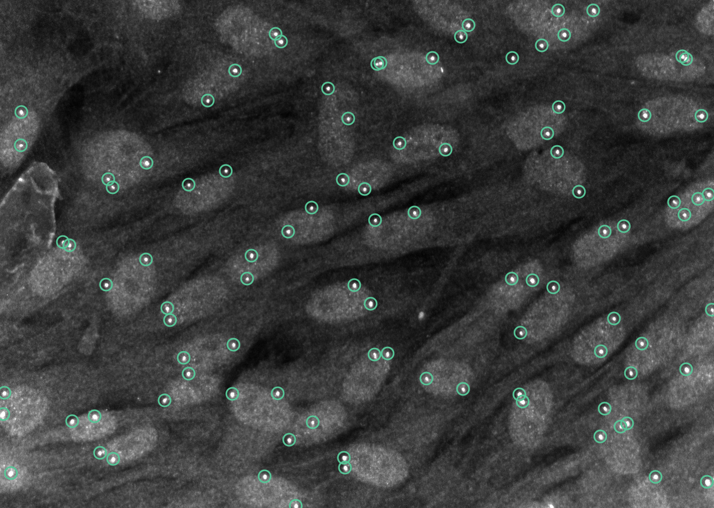

AGENTS-A1.5 / SCIENTIFIC PROBLEM SOLVING
Fluorescence
Spot Detection
Find the signal.
Refine the detector.
Turn fluorescence images into spot coordinates. Follow a recorded optimization run as it combines U-Net detection, peak tuning and targeted retraining across nine datasets.

THE RECORDED RESULT
Eight submissions.
A stronger spot detector.
Aggregate improvement rises from -0.0469 to 0.1158. The submission-by-submission view below preserves the original F1 scores for every dataset.
01 / FROM DETECTION TO REFINEMENT
Let each evaluation
guide the next change.
Choose a dataset and step through all eight submissions. Each point is an original F1 score; the recorded changes explain what was tried between evaluations.
DNA-FISH
Combine U-Net detection with tuned LoG fallback
Train a U-Net detector and retain a tuned Laplacian-of-Gaussian fallback for per-instance method selection.
Every dataset, every submission Original F1 scores and downloadable records
02 / LOOK AT THE DETECTIONS
One field.
Every spot accounted for.
A retained DNA-FISH prediction from a separate run, compared with reference annotations on the same full image. It is not an output from any of the eight submissions above.
About this case Background, approach and evidence
Task background
Detect fluorescence spots in two- and three-dimensional microscopy data. The nine evaluated instances are synthetic simple, synthetic complex, DNA-FISH, HybISS, MERFISH, smFISH, telomeres, TERRA and synthetic 3D.
Approach
The recorded run combines U-Net inference with a LoG fallback, tunes peak thresholds and test-time augmentation, retrains weak instances, aligns preprocessing and introduces spot-weighted loss. The step labels summarize recorded operations; they do not establish the isolated causal effect of each change.
Aggregate improvement
The initial and final values are corrected to -0.0469 and 0.1158. Corrected intermediate aggregate values were not supplied, so the trajectory uses the original per-instance F1 scores. No intermediate aggregate scores are inferred.
Optimization record
Task s41592-025-02662-x. All eight submissions and their original F1 scores are retained. These are observations from one run, not independent replicates.
Prediction comparison
The retained prediction comes from 0915-qwen36-v6-old-nb-glm-qwen38-ep8-ckpt1172-newconfig, in the 20261015 showcase-compact-nb-lite-v2 seed-1 run. The sample is the fixed first DNA-FISH test image. Its F1 of 0.9231 describes this image only.
Image and matching
All reference and predicted coordinates are preserved. The display uses the supplied full-frame image, with the original linear contrast mapping from the minimum to the 99.8th percentile. No physical pixel calibration was verified.
CONTINUE EXPLORING